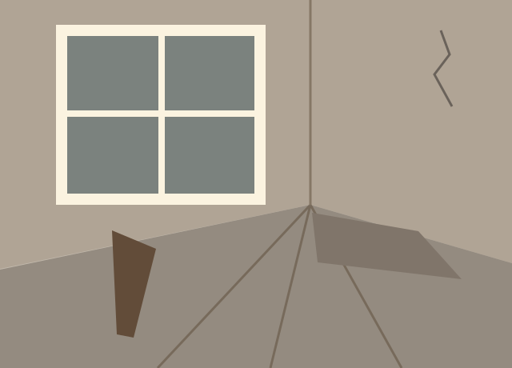
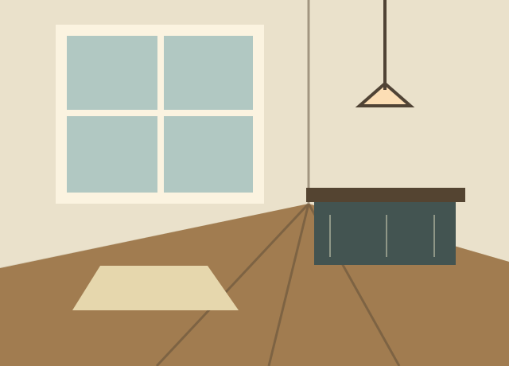

Przejdź do treści
✦
Kowal-Bud
Start
Usługi
Realizacje
O nas
Kontakt
Przed i po
Przesuń suwak, aby porównać dwa etapy koncepcyjnej aranżacji.


Udział widoku po remoncie
Ilustracja koncepcyjna · kuchnia w mieszkaniu